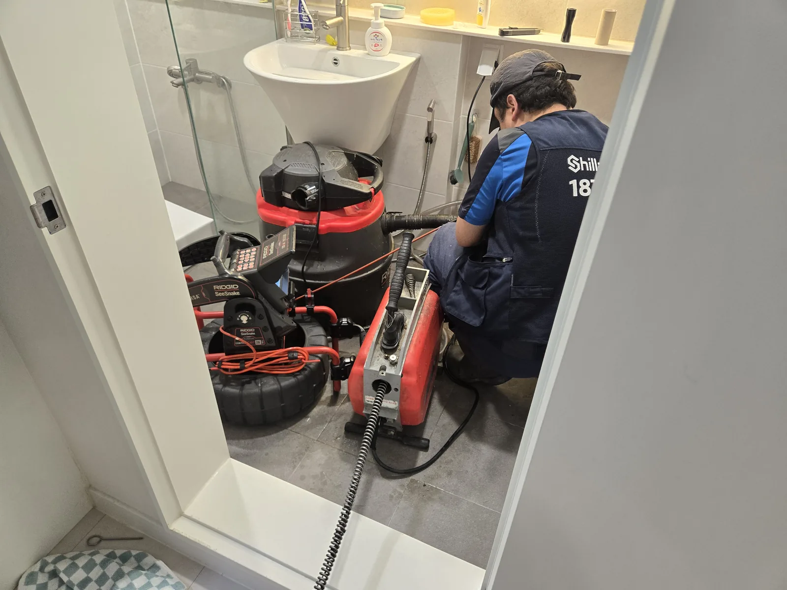
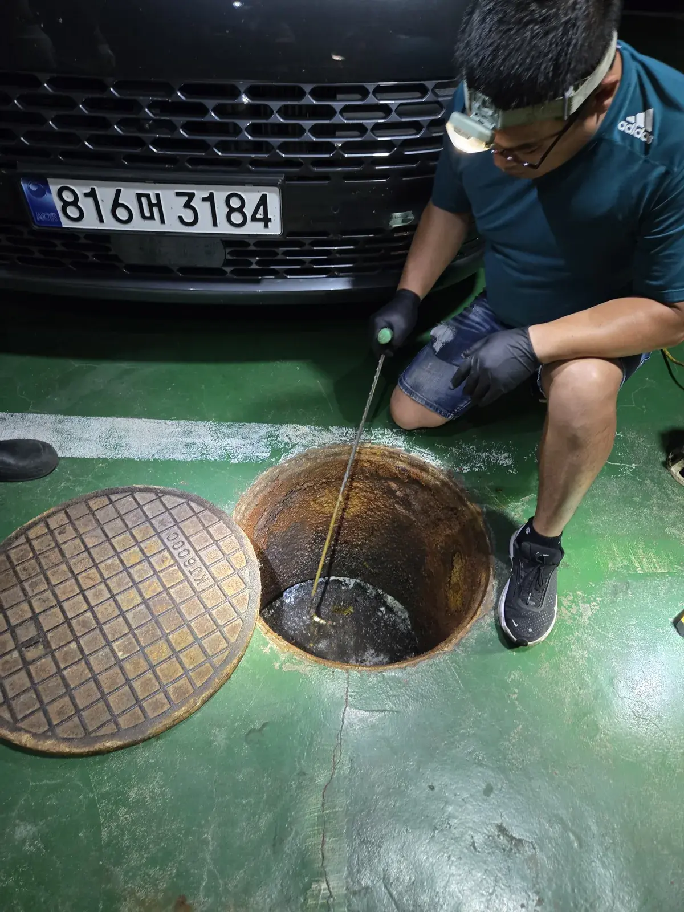
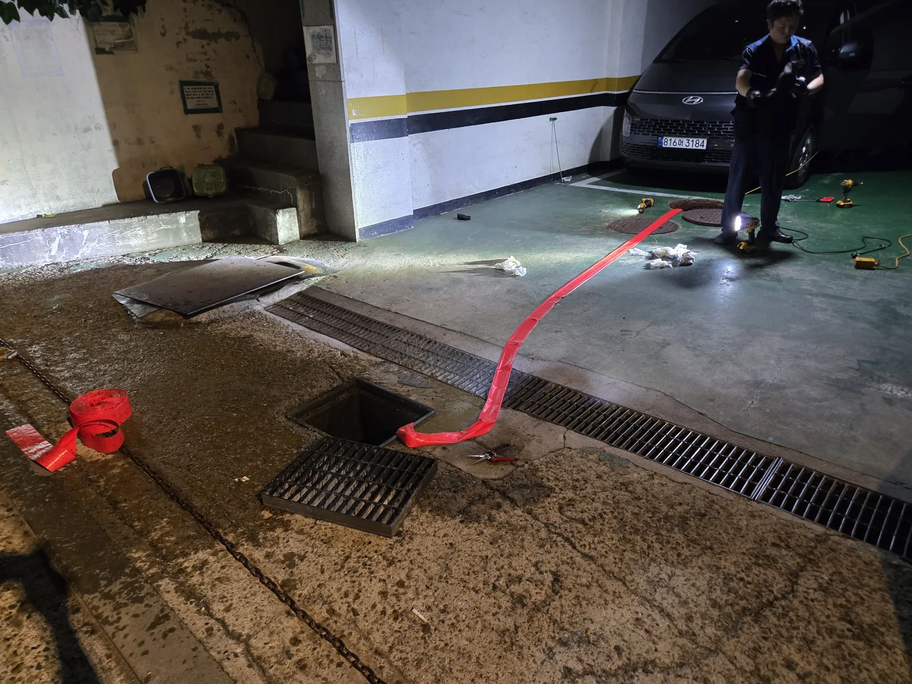

마포구 도화동 변기막힘, 두 곳에서 동시에 역류
이번 도화동 현장은 변기 한 곳만 물이 천천히 내려가는 일반적인 막힘과 달랐습니다. 서로 다른 두 변기에서 역류 증상이 함께 나타났기 때문에 변기 자체의 단순 이물질보다 세대에서 공용으로 연결되는 오수 배관이나 정화조 방향의 흐름까지 확인할 필요가 있었습니다. 추가 사용 시 오수가 다시 올라올 수 있어 변기 사용을 중단하고 원인 구간을 단계별로 점검했습니다.
1단계: 배관내시경으로 오수관 내부 검사
변기를 분리해 배관 입구를 확보한 뒤 배관내시경을 투입했습니다. 화면으로 배관 내부의 상태와 진행 방향을 확인하면서 막힘이 어느 구간에서 영향을 주는지 살폈습니다. 변기 두 곳이 동시에 역류하는 경우에는 눈앞의 변기만 뚫고 끝내기보다 공용 오수관 방향까지 흐름을 추적해야 재발 원인을 놓치지 않을 수 있습니다.

2단계: 석션과 스프링 관통 작업 병행
내부 상태를 확인한 뒤 석션 장비로 배관 안의 오수와 이물질을 흡입하고, 스프링 관통기를 투입해 막힘 구간을 물리적으로 확보했습니다. 단순 압력 작업만 반복하지 않고 흡입과 관통을 병행해 배관 내부의 흐름을 회복시키는 방식으로 진행했습니다.

3단계: 스프링을 깊게 투입해 배관 흐름 확보
스프링 케이블을 배관 안쪽으로 충분히 투입하면서 작업자가 구간별 저항을 확인했습니다. 다른 작업자는 케이블 진행을 보조해 꺾임이나 무리한 힘이 발생하지 않도록 했습니다. 변기 역류가 두 곳에서 함께 발생한 만큼 가까운 구간만 관통하는 것이 아니라 공용 배관 방향의 흐름이 살아나는지 확인하면서 작업했습니다.

4단계: 정화조를 열어 수위와 공용 오수관 상태 확인
세대 내부 작업만으로 판단을 끝내지 않고 건물 정화조를 직접 점검했습니다. 정화조 수위가 높거나 공용 오수관의 배출 여건이 좋지 않으면 세대에서 내려온 오수가 원활하게 빠지지 못해 낮은 위치의 변기에서 역류 증상이 나타날 수 있습니다. 맨홀을 개방한 뒤 수위와 유입 상태를 확인해 실내에서 확인한 증상과 연결해 판단했습니다.

5단계: 펌프로 정화조 수위를 낮춰 배출 여건 확보
정화조 상태를 확인한 뒤 펌프를 사용해 내부 수위를 낮추는 작업을 진행했습니다. 수위를 조절해 오수 배출 여건을 확보한 상태에서 공용 오수관의 흐름과 세대 배수 상태를 다시 확인했습니다. 실내 배관과 건물 공용부를 함께 점검함으로써 단순 변기막힘인지, 공용 오수관과 정화조 수위가 함께 영향을 준 역류인지 현장 상황에 맞춰 대응했습니다.

변기막힘이 반복되거나 여러 곳에서 역류한다면
변기 한 곳만 막혔다면 변기 내부 이물질이나 가까운 배관을 우선 의심할 수 있습니다. 하지만 이번 마포구 도화동 현장처럼 변기 두 곳이 동시에 역류한다면 세대 오수관, 공용배관, 정화조까지 점검 범위를 넓혀야 할 수 있습니다. 신라건축설비는 증상에 따라 배관내시경·석션·스프링 관통기 등 장비를 조합하고 필요한 경우 건물 공용부까지 확인해 원인 구간을 좁혀갑니다.
마포구 변기막힘·역류 자주 묻는 질문
변기 두 곳이 동시에 역류하면 공용배관 문제인가요?
가능성이 높아지지만 현장 확인 없이 단정할 수는 없습니다. 여러 변기에서 같은 시점에 증상이 나타나면 각 변기 자체보다 서로 연결되는 오수관과 공용배관의 흐름을 함께 확인하는 것이 중요합니다.
배관내시경은 왜 사용하나요?
배관 내부를 화면으로 확인해 막힘 위치와 배관 상태를 판단하는 데 도움이 됩니다. 무조건 장비를 깊게 넣기보다 내시경 확인 결과와 배수 증상을 함께 보고 석션, 스프링, 고압세척 등 적합한 작업을 선택합니다.
정화조 수위도 변기 역류에 영향을 주나요?
건물 구조와 배관 상태에 따라 영향을 줄 수 있습니다. 정화조 수위가 높고 배출이 원활하지 않은 상황에서는 공용 오수관의 흐름이 나빠져 세대 배수에 영향을 줄 수 있어 필요할 경우 정화조까지 점검합니다.